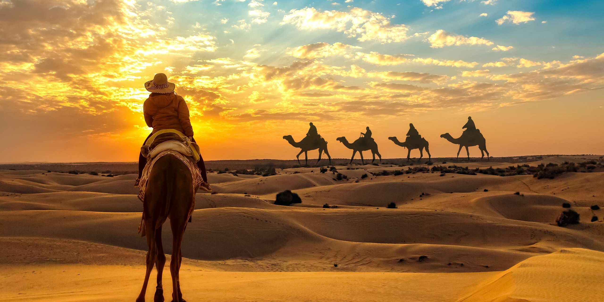

Rajasthan
The six Hill Forts of Rajasthan, spread across Rajasthan state in northern India, clustered together as a designated UNESCO World Heritage Site. The forts are mainly based in the Aravalli Range, and were built and enhanced between the 5th and 18th centuries CE by several Rajput kings of different kingdoms.

Himalaya
Tourism in a broader sense has existed for a long time in the Himalayas: in the form of pilgrimage to Hindu sanctuaries that are located high up in the mountains. With the arrival of the British in the 19th century, summer resorts, the so-called Hill Stations, were established.